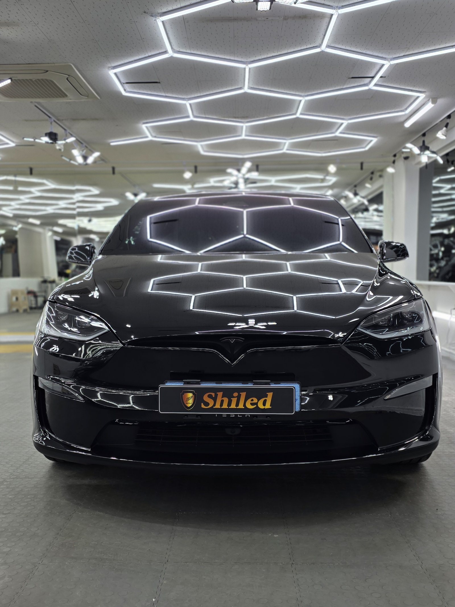
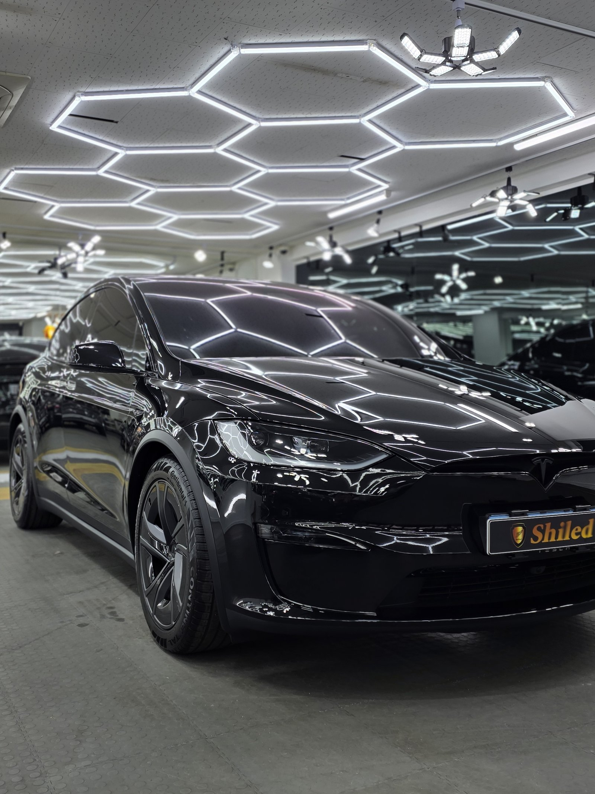
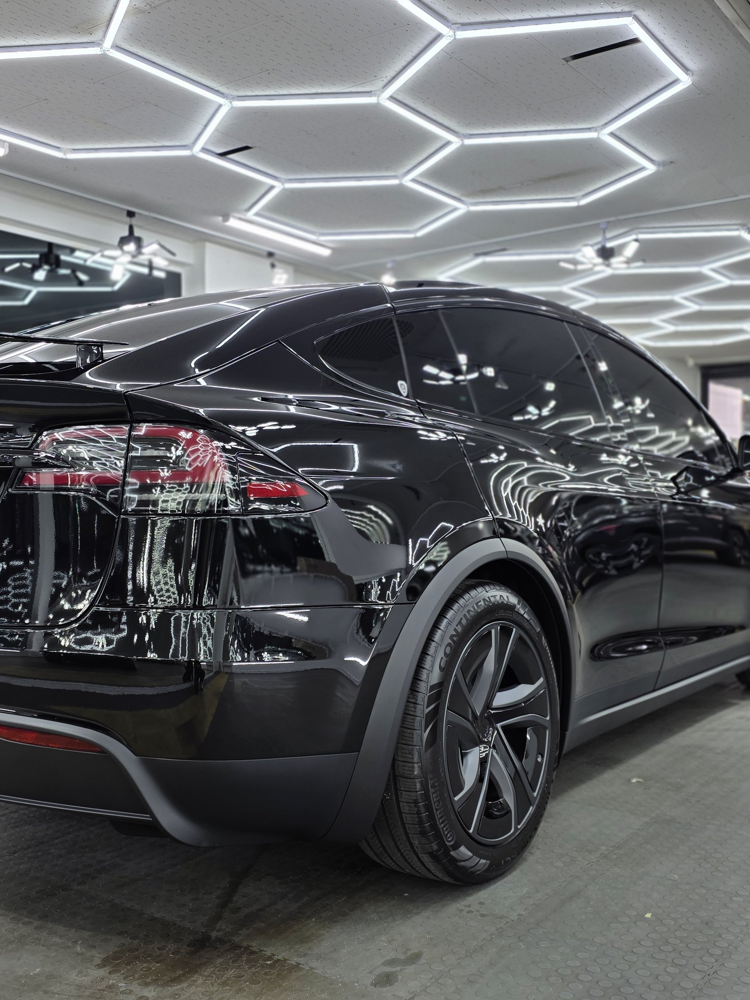
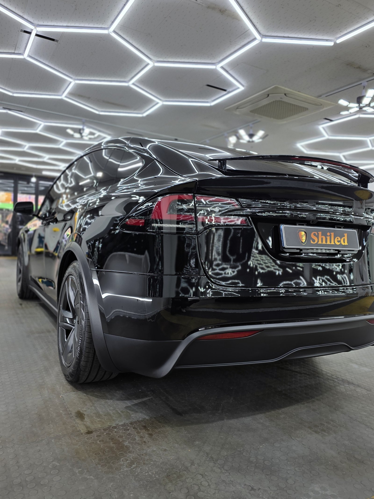
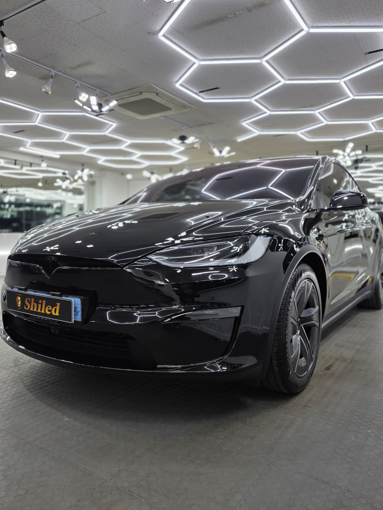
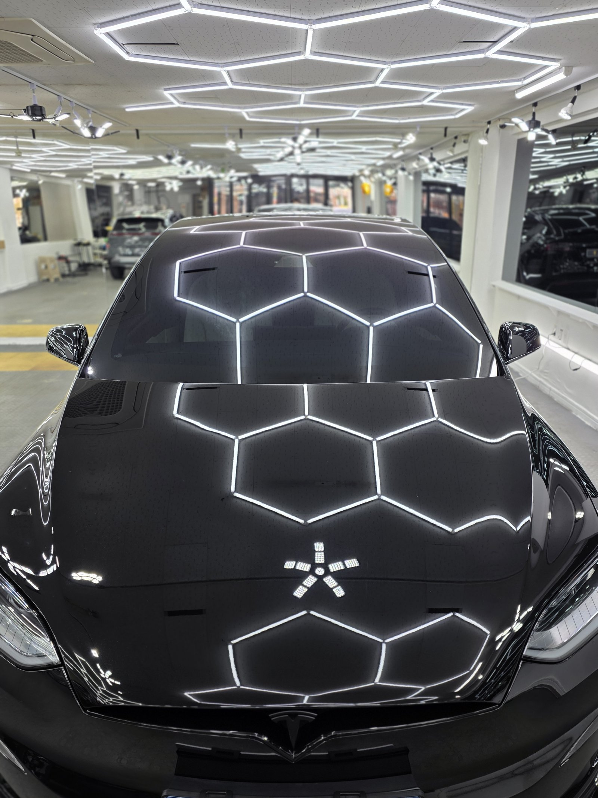
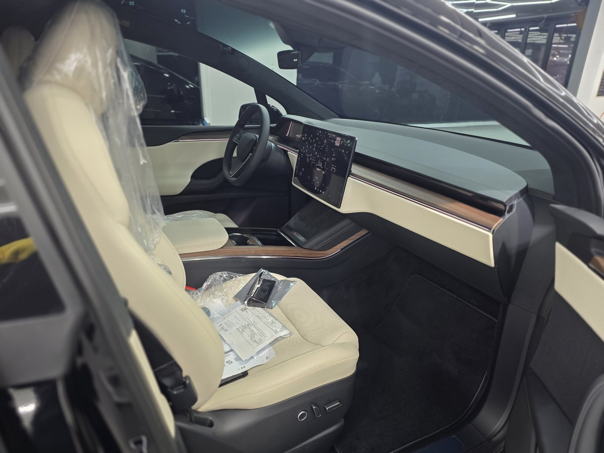
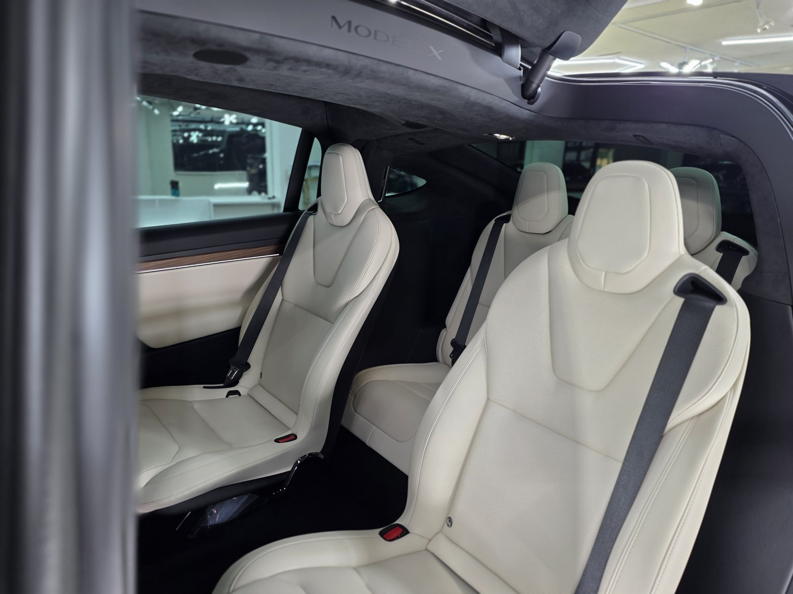
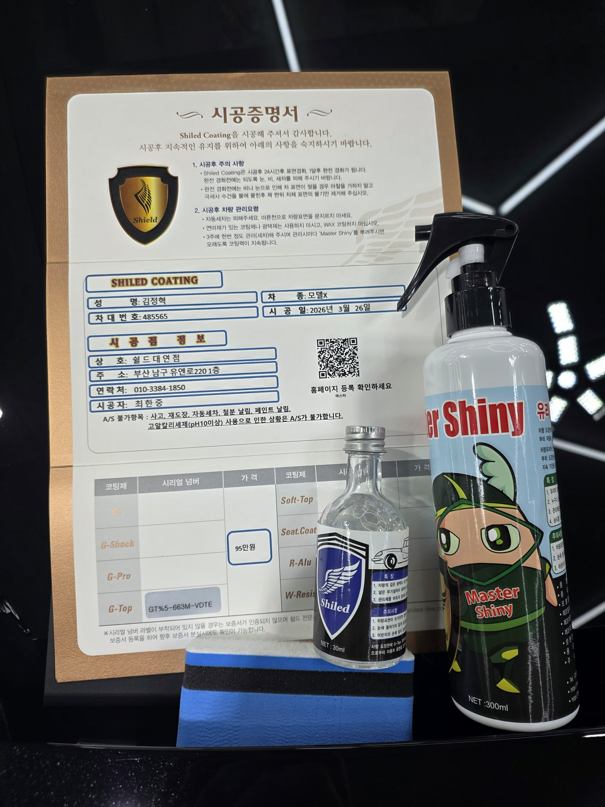

테슬라 모델X 검정입니다. 아직 출고 전, 새 차입니다.
이 차는 출고 전에 G-TOP 유리막코팅으로 진행했습니다.

전기차도 신차코팅이 필요한가
전기차도 도장 관리 원리는 내연기관차와 똑같습니다.
운송과 전시 과정에서 미세 오염이 붙는 건 마찬가지입니다. 도장면이 가장 깨끗한 출고 전에 코팅막을 입혀둬야, 인도 후 관리가 훨씬 수월해집니다. 그래서 쉴드광택은 출고 전 신차 시공을 맡아 진행합니다.

검정 모델X에 왜 G-TOP인가
G-TOP은 발수력과 방오성을 끌어올린 코팅입니다.
검정은 물자국과 오염이 가장 잘 드러나는 색입니다. 세차 후 물기가 표면에 맺혀 있으면 마를 때 자국이 남는데, G-TOP을 올리면 물이 맺히지 않고 그대로 굴러떨어집니다. 코팅제는 대표가 화학공학 전공으로 직접 개발·제조한 제품입니다.

기술자의 팁
신차라고 바로 코팅을 올리지 않습니다. 운송·보관 중 묻은 미세 오염을 디테일링 세차와 탈지로 걷어낸 뒤에 올립니다. 깨끗한 바탕 위에 올려야 코팅이 제대로 밀착합니다.



외부만이 아니라 안까지
출고 전 차량은 안팎 컨디션을 함께 정리합니다.
실내는 아직 보호 비닐이 씌워진 신차 그대로입니다. 외부 도장은 G-TOP으로 발수·방오를 잡고, 인도까지 깨끗한 상태로 관리합니다.


시공증명서를 함께 드립니다
모든 시공 차량에 시공증명서를 드립니다.
차종·시공일·코팅제 시리얼 번호가 적혀 있고, 홈페이지에 등록해 보증을 받으실 수 있습니다. 이 차는 G-TOP 코팅으로 기록돼 있습니다.

차종·시공일·코팅제 시리얼이 기재된 시공증명서
자주 묻는 질문
Q. 전기차도 신차코팅이 필요한가요?
A. 필요합니다. 전기차도 도장 관리 원리는 내연기관차와 똑같습니다. 도장면이 가장 깨끗한 출고 전에 코팅막을 입혀야 이후 관리가 수월해집니다.
Q. 검정 모델X에는 왜 G-TOP인가요?
A. 이 차는 G-TOP으로 진행했습니다. 발수력과 방오성을 끌어올려, 물자국이 가장 잘 드러나는 검정 도장에서 물이 맺히지 않고 굴러떨어지게 합니다.
Q. 신차코팅도 전처리를 하나요?
A. 합니다. 신차라도 운송·보관 중 미세 오염이 묻습니다. 디테일링 세차와 탈지로 표면을 정리한 뒤 코팅을 올려야 제대로 밀착합니다.
Q. 쉴드광택 위치와 예약은 어떻게 하나요?
A. 부산 남구 유엔로220 1F 쉴드광택입니다. 예약·상담은 010-3384-1850, 대표 최한중이 직접 상담하고 책임 시공합니다.
새 차일수록 시작점이 다릅니다. 가장 깨끗할 때 입혀두십시오.
제품을 직접 만드는 사람이 직접 시공합니다.
부산에서 신차코팅을 고민 중이시면 편하게 연락 주십시오.
어떤 차를 타냐보다 어떻게 타냐가 중요합니다~!
📞 010-3384-1850 견적 문의쉴드광택 · 부산 남구 유엔로220 1F · 대표 최한중